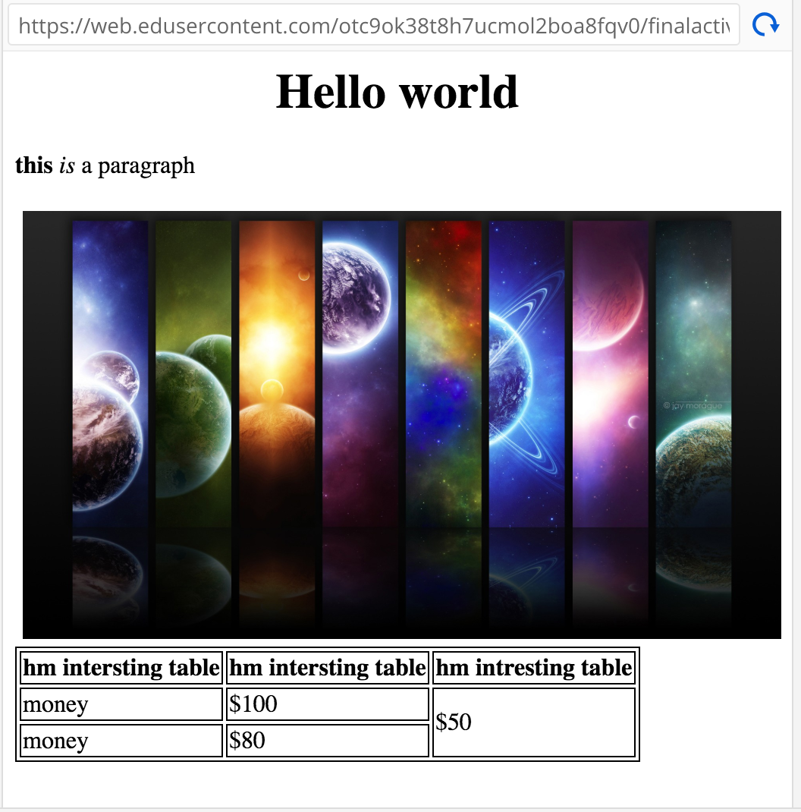

everything you have learned on this website will be put to the test with this website
link for the image is this http://www.designyourway.net/blog/wp-content/uploads/2018/01/cool-desktop-wallpaper.jpg
width of image is 500px
Now go ahead and remake this webpage!
